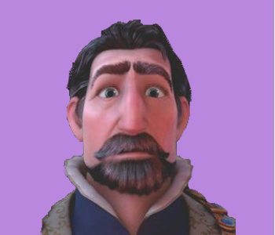

본문콘텐츠영역
ABOUT
Long ago, a drop of magical sunlight falls from the sky and sprouts a flower with healing powers. Upon discovering it, an old beggar woman named Mother Gothel hides the flower and uses it to stay young for centuries, until royal soldiers from the nearby kingdom of Corona find and uproot it to save their pregnant and ill Queen. The Queen gives birth to a baby princess with long golden hair. While the king and queen are sleeping one evening, Gothel discovers the hair has the same powers as the flower, but turns brown and becomes powerless when cut.

She kidnaps the girl, named Rapunzel, and raises her in a hidden tower in the woods, using her hair to stay young. Each year, on Rapunzel's birthday, the king and queen release thousands of sky lanterns in hope she will see them and return home. Rapunzel becomes obsessed with the distant lights, and, on the eve of her 18th birthday, asks Gothel for permission to see them closer.
Gothel refuses, claiming that the outside world is dangerous and Rapunzel is too weak and young to survive in it. Later, handsome thief Flynn Rider steals Rapunzel's intended crown from the palace, abandons his partners, the Stabbington brothers, and takes refuge in the tower. Rapunzel knocks him out and hides him in a closet. She tries to show him to Gothel as proof she is capable of taking care of herself however, Gothel refuses to listen, so Rapunzel sends Gothel on a three-day journey to get new paints as a birthday gift. Rapunzel hides the crown and tells Flynn he can only get it back by taking her to see the lights.
Characters
Introducing the charming characters in the tangled story, each with their own personalities, such as Rapunzel, a blonde girl with magical hair, and a character who hinders her and helps her.
-
- Rapunzel
- her life in a tower, imagining the world outside. go on an adventure finally live her dream.
-

- Flynn Rider
- he begins to fall in love with Rapunzel, he transforms into a more compassionate, chivalrous, and trustworthy person
-

- Gothel
- Gothel kidnapped the princess and locked her away in a secluded tower. she hoarded Rapunzel's healing magic.
-

- Pascal
- Pascal is a loyal friend to Rapunzel. he is one of the driving forces in pushing Rapunzel to leave the tower
-

- Maximus
- Maximus is brave, daring, bold and not at all cowardly even being more feared than his captain.
-

- Stabbington
- her life in a tower, imagining the world outside. go on an adventure finally live her dream.
-

- King Frederic
- He is the father of Rapunzel, the husband of Queen Arianna, and the king of Corona.
-
- Queen Arianna
- She is the mother of Rapunzel, the wife of King Frederic, and the queen of Corona.
Trailer
Check out the official Tangled (2010) Trailer starring Mandy Moore! Let us know what you think in the comments below. The magically long-haired Rapunzel has spent her entire life in a tower, but now that a runaway thief has stumbled upon her, she is about to discover the world for the first time, and who she really is.


Gallery
Tangled is a 2010 American 3D computer-animated musical adventure fantasy comedy filmproduced by Walt Disney Animation Studios and released by Walt Disney Pictures. Loosely based on the German fairy tale Rapunzel in the collection of folk tales published by the Brothers Grimm, Check out the characters in various scenes in Rapunzel, who has been loved for a long time.